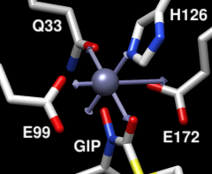
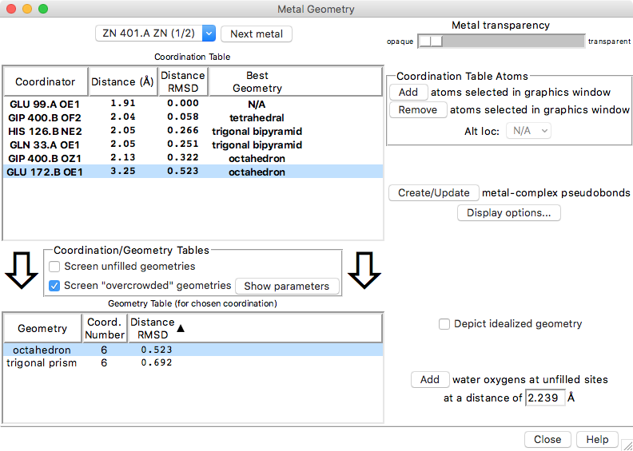

|  |
Metal Geometry is a tool for analyzing metal ion coordination geometries. It also allows adding or deleting coordination pseudobonds. See also: Structure Measurements, FindHBond, Build Structure, PseudoBond Reader
There are several ways to start Metal Geometry, a tool in the Structure Analysis category. Metal Geometry can also be started by by double-picking a metal ion from the graphics window (doubleclicking it with the button assigned to picking) and choosing Coordination Geometry from the resulting context menu.
When multiple metal ions are present, the site of interest can be chosen from the pulldown menu near the top of the dialog. Clicking the Next metal button chooses the next metal ion in the list. The view in the graphics window will focus on the specified metal ion and nearby atoms. The Metal transparency slider allows adjusting the transparency of the displayed metal ion.
|  |
The Coordination Table lists atoms that might be coordinated to the metal ion, sorted by distance. Each row represents a ligation set comprised of not only the atom named in that row, but also all of the atoms in the rows above it. Clicking a row chooses that ligation set as the current ligation set and selects its atoms. The rows cannot be reordered, but atoms can be added to or removed from the list by selecting them in the graphics window and clicking the Add or Remove buttons on the right. Only one location of an atom with alternate locations can be listed at a time, and which location is listed can be controlled with the Alt loc menu to the right of the table. Columns:
The Geometry Table lists possible metal coordination geometries for the current ligation set, subject to certain screening criteria. Columns:
Unlikely geometries can be screened out of the tables:
A geometry is considered overcrowded if hypothetical metal-ligating atoms placed at the ideal angles for that geometry, at a distance equal to the [average | maximum | minimum ] of the actual chosen ligating atoms, would be less than mindist (default 2.8) Å apart.Clicking Hide parameters hides the overcrowding settings.
In an idealized coordination geometry, the ligating atoms fall along vectors that emanate from the metal ion. The angles between the vectors are characteristic of the specific Geometry. The radiating set of vectors is repositioned to coincide as much as possible with the real positions of the metal ion and ligating atoms, and then for each real ligating atom, an idealized ligating atom is placed along the corresponding vector at the same distance from the idealized metal ion as the real atom is from the real metal ion. The best-fit root-mean-square deviation between the real atoms (including the metal ion) and their idealized positions is computed.
{kind=link}